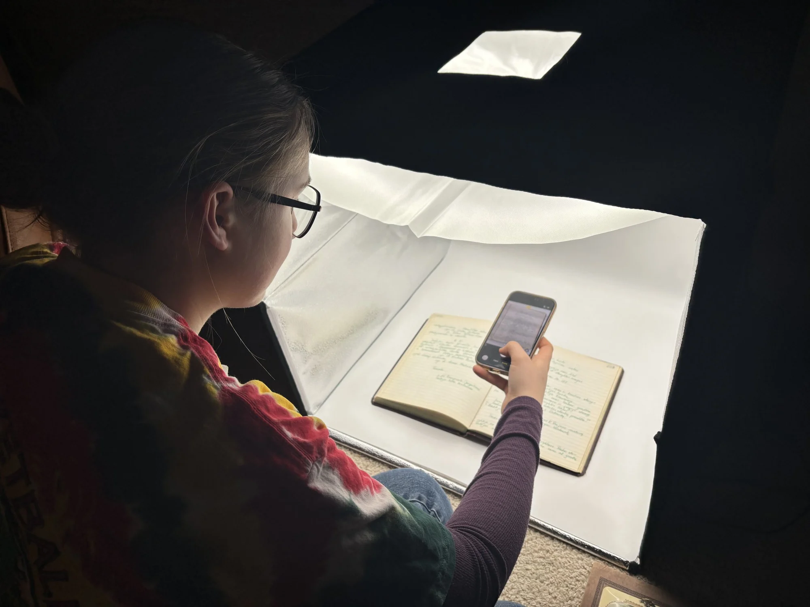
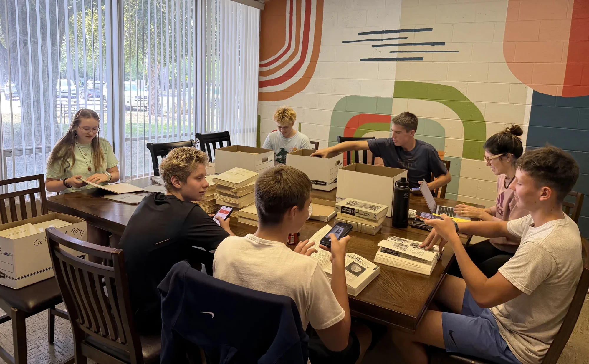
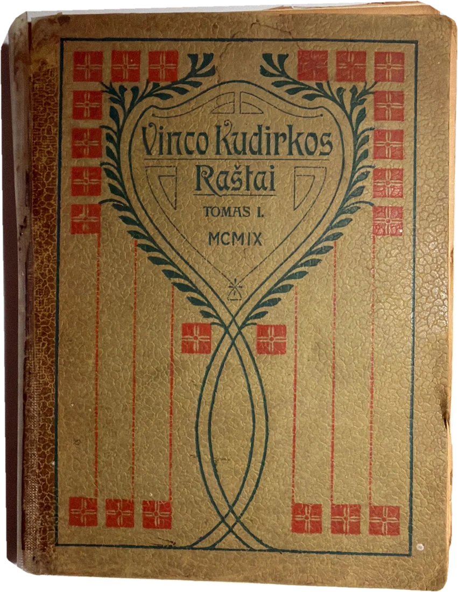
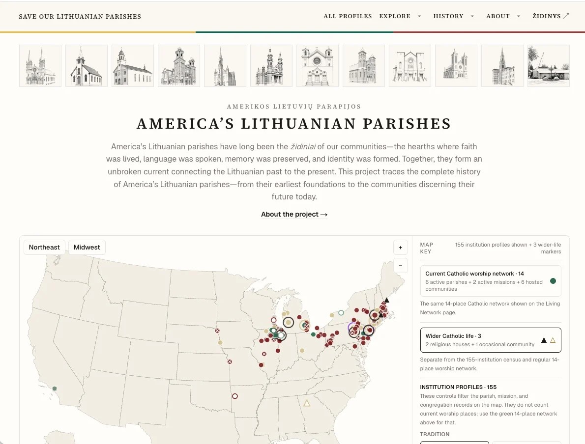
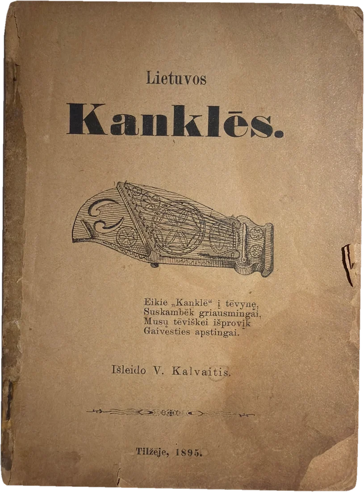

Memory. Inheritance. Continuity.
Carrying Lithuanian cultural memory forward—through the language, faith, knowledge, and institutions that sustain it, and the young people who will shape what comes next.
Praeitis yra žiburys, kurio šviesoje galime aiškiau matyti, kur stovime šiandien.
Saugome lietuvių kultūros šaltinius, stipriname įstaigas, kurios juos perduoda, ir ruošiame kartą, kuri šį palikimą neš toliau.
Our mission Misija
Our work Mūsų darbai

Books and the lives behind them Knygos ir jų istorijos


A language kept in print. Lietuviškas žodis spaudos draudimo metais.
Lietuvos Kanklės · V. Kalvaitis · Tilžė, 1895